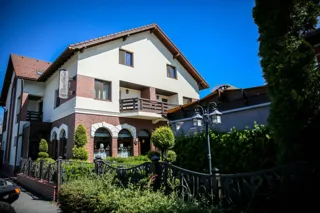
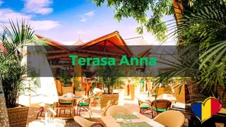
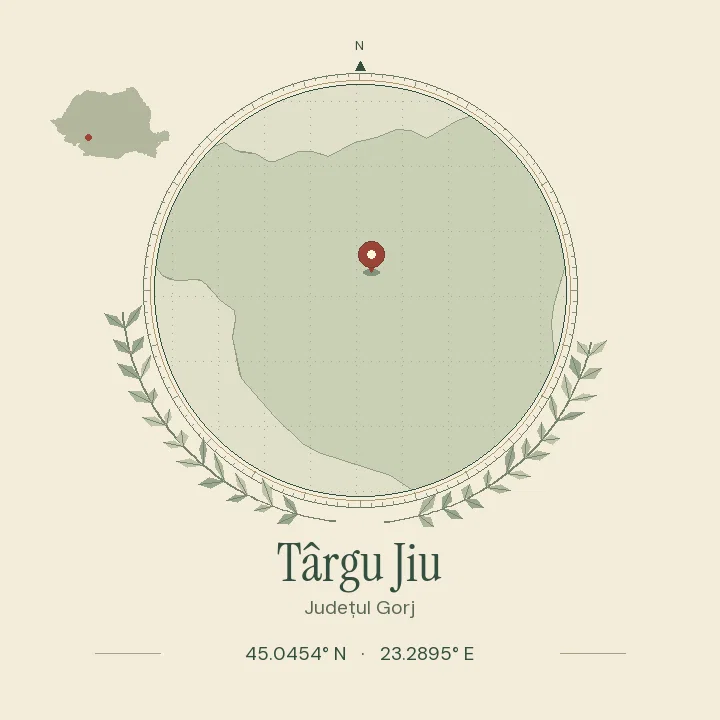
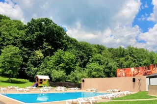

Locații de nuntă în Târgu Jiu
- locații în director
- 5
- cu cazare în registrul SITUR
- 2
- medie ponderată Google
- 4,7 / 5
- evaluări Google
- 4.298
Cum alegi o locație în Târgu Jiu
În Târgu Jiu poți începe comparația cu Pensiunea Parâng (pensiune), Pensiunea Casa Vera (pensiune), Hotel Anna (cazare). Aceste proprietăți apar în primele poziții când luăm în calcul împreună nota și numărul de evaluări Google. Salvează adresele care vă interesează pentru a le așeza apoi alături în fișa de comparare a ofertelor.
În fișele proprietăților poți compara dotări concrete la Pensiunea Parâng (terasă, cazare, parcare proprie), Pensiunea Casa Vera (terasă, cazare, intrare accesibilă). Pentru oferta de nuntă, întreabă ce spații și servicii dintre cele prezentate intră în rezervarea privată pentru data voastră.
Dacă vin rude de departe, Pensiunea Parâng are o unitate de cazare asociată în registrul SITUR. Înregistrarea pentru Parâng cuprinde 26 de locuri de dormit în 13 spații de cazare. Întreabă câte camere pot fi păstrate pentru aceeași noapte înainte să trimiți invitaților detaliile de rezervare.
Dacă vrei să vezi două proprietăți în aceeași zi, poți continua de la Pensiunea Casa Cartianu spre Pensiunea IRIS din Turcinești. Punctele lor sunt la 1,2 km în linie dreaptă. Deschide traseul înainte să fixezi ora celei de-a doua vizite, mai ales dacă grupul se deplasează cu autocarul.
Locații pentru vizionare
Ordinea ține cont de nota Google și de numărul evaluărilor. Cum calculăm ordinea

Fotografie a locației · Sursa fotografiei Târgu Jiu · Pensiune
Pensiunea Parâng
Pensiunea Parâng, Târgu Jiu. La Parâng, un vizitator a fost surprins că micul dejun se comanda dintr-o listă cu mai multe variante.
Aleea Bicaz 23, 210193 Târgu Jiu+40 758 757 757
Fotografie a locației · Sursa fotografiei Târgu Jiu · Pensiune
Pensiunea Casa Vera
Pensiunea Casa Vera. La Casa Vera din Târgu Jiu contează la ce se referă fiecare cifră: terasa are 50 de locuri, în timp ce restaurantului îi sunt atribuite 60.
Strada Vasile Alecsandri nr.51-53, 210201 Târgu Jiu+40 253 212 200
Fotografie a locației · Sursa fotografiei Târgu Jiu · Cazare
Hotel Anna
Hotel cu restaurant și terasă pe bulevardul Ecaterina Teodoroiu din Târgu Jiu, nota 4,7 din 1.570 de evaluări. Nunțile apar pe site.
Bulevardul Ecaterina Teodoroiu 17, 210118 Târgu Jiu+40 253 206 333
Hartă ilustrată Târgu Jiu · Pensiune
Pensiunea Giovani
Pensiunea Giovani, Târgu Jiu. La Giovani, un părinte a remarcat un lucru pe care descrierile de cazare îl omit ușor.
Strada Mesteacanului 55A, 210138 Târgu Jiu+40 728 320 582
Fotografie a locației · Sursa fotografiei Târgu Jiu · Pensiune
Pensiunea Casa Cartianu
O persoană care rezervase o masă la Casa Cartianu povestește că restaurantul se afla între două evenimente și că servirea a durat mai mult decât se aștepta.
DJ664 282, 217531 Târgu Jiu+40 756 363 454
Întrebări despre locațiile din Târgu Jiu
Unde pot dormi invitații în Târgu Jiu?
În registrul de cazare SITUR găsim Pensiunea Parâng (26 de locuri de cazare), Pensiunea Casa Vera (16 locuri de cazare). Verifică ce camere sunt libere pentru noaptea evenimentului.
Ce proprietăți din Târgu Jiu au grădină sau terasă?
Pensiunea Parâng (terasă); Pensiunea Casa Vera (terasă); Hotel Anna (terasă). Cere administratorului condițiile de folosire pentru o petrecere privată.
Care locație din Târgu Jiu are cele mai multe evaluări Google?
Pensiunea Casa Vera are 1.755 de evaluări în profilul Google folosit la documentare. Evaluările acoperă și alte experiențe la proprietate, inclusiv vizitele fără eveniment.
Unde apare o intrare accesibilă în Târgu Jiu?
Profilurile Google indică o intrare accesibilă la Pensiunea Casa Vera, Hotel Anna. Pentru o cununie în exterior, cere detalii despre traseul dintre intrare și zona cu scaune.
Ce alte localități pot include într-o vizionare lângă Târgu Jiu?
Cele mai apropiate adrese comparate pe hartă sunt în Turcinești, Stănești, Bumbești-Jiu. Găsești mai jos distanțele dintre proprietățile folosite pentru această comparație.
Vizionări în apropiere
- Turcinești · 1 locație. Între Pensiunea Casa Cartianu și Pensiunea IRIS sunt 1,2 km în linie dreaptă.
- Stănești · 1 locație. Între Pensiunea Casa Cartianu și PENSIUNEA LA LIVADA sunt 5,8 km în linie dreaptă.
- Bumbești-Jiu · 1 locație. Între Pensiunea Casa Cartianu și My Way sunt 7,8 km în linie dreaptă.